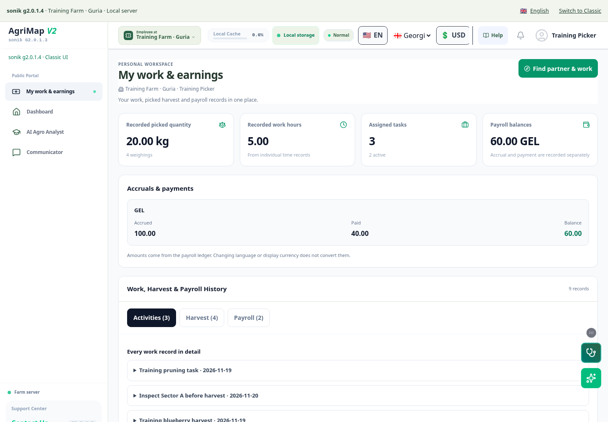
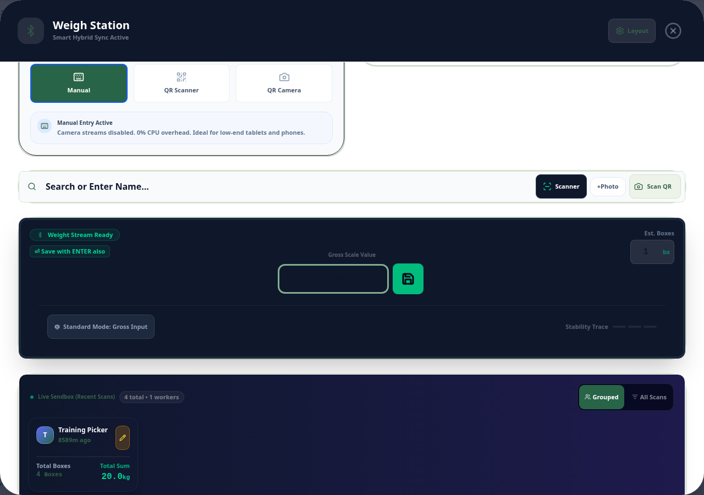
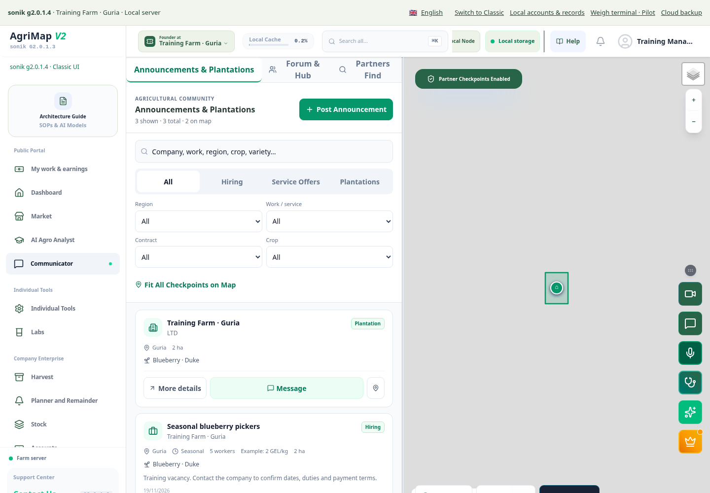
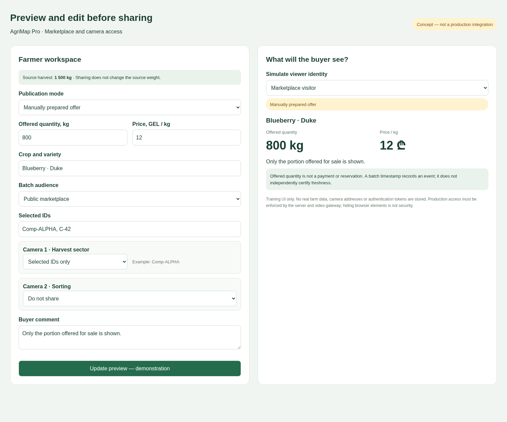
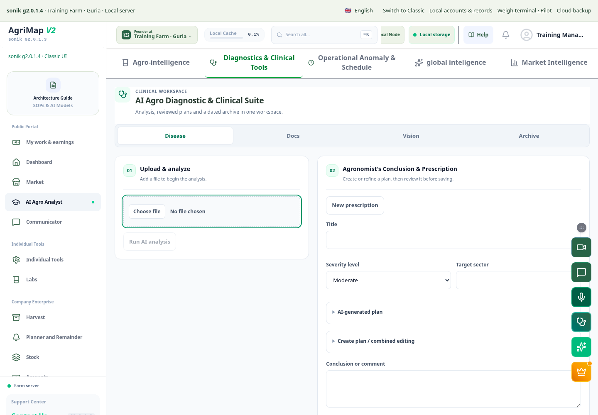

Giorgi Nishnianidze
Product creation and development. Translates user requirements into software features.
AGRIMAP PRO / Accelerator pitch
From plantation operations to transparent records and market connections

AGRIMAP PRO / Problem
Workforce, harvest and payments often live in separate records
AGRIMAP PRO / Why us
Domain knowledge and development alongside users
AGRIMAP PRO / Solution
Plan → Execute → Harvest → Inventory → Results
Sector and crop
Team and task
Harvest and weighing
Inventory and sale
Payroll and analysis
AGRIMAP PRO / Product in action
Worker, crate, weight, sector and agreed rate

AGRIMAP PRO / People and finance
A shared source of work and payment history
AGRIMAP PRO / Customers
Initial sales focus on selected commercial farms
AGRIMAP PRO / Market and partners
Regional discovery and communication in one platform

AGRIMAP PRO / Product roadmap
Preview and edit before sharing: a planned feature concept

AGRIMAP PRO / Positioning
Combine farm operations with a useful partner network
AGRIMAP PRO / Revenue model
Proposed prices to validate with customers
GEL 150 / month = GEL 1,800 / year per farm
AGRIMAP PRO / Go to market
Start onboarding before peak season with a small, testable workflow
Interest
Demonstration
Trial onboarding
Active use
Paid subscription
AGRIMAP PRO / Readiness and development
Software and screens exist; commercial outcomes need pilot evidence

AGRIMAP PRO / Team
Built with practitioners and users
Product creation and development. Translates user requirements into software features.
IT specialist and technical development. Remote collaboration from the United Kingdom.
Agronomy and business workflows. Plantation owner and TBC Bank branch manager; financial experience.
Testing and issue identification. Six years of plantation-management experience; verifies fixes.
AGRIMAP PRO / Next stage
Proposed stages after a grant award—not completed milestones
Select farms, understand needs and prepare a repeatable demonstration.
Complete one full operational workflow and verify resulting records.
Onboarding time, corrections and willingness to adopt paid service.
AGRIMAP PRO / Accelerator support
Program grant purpose: marketing, sales and farmer onboarding
AGRIMAP PRO / Appendix A · Data flow
Keep each relationship tied to its source and company
Company and map
Employee / team
Work / harvest
Movement / accrual
Personal history
AGRIMAP PRO / Appendix B · Planned access
A public offer must not expose internal company data
AGRIMAP PRO / Appendix C · Readiness boundaries
Distinguish operational workflows from planned integrations